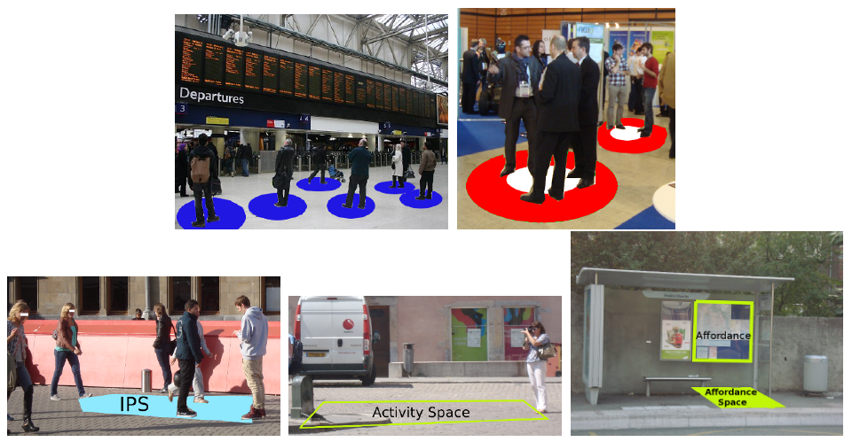
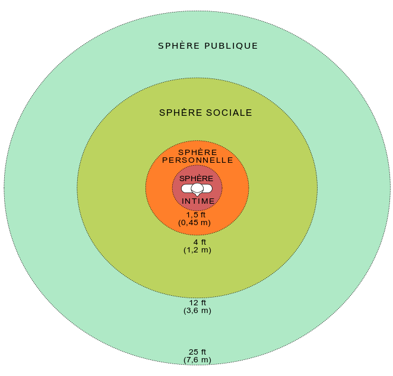
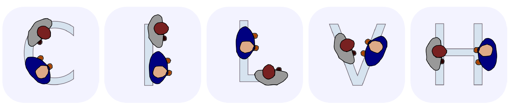
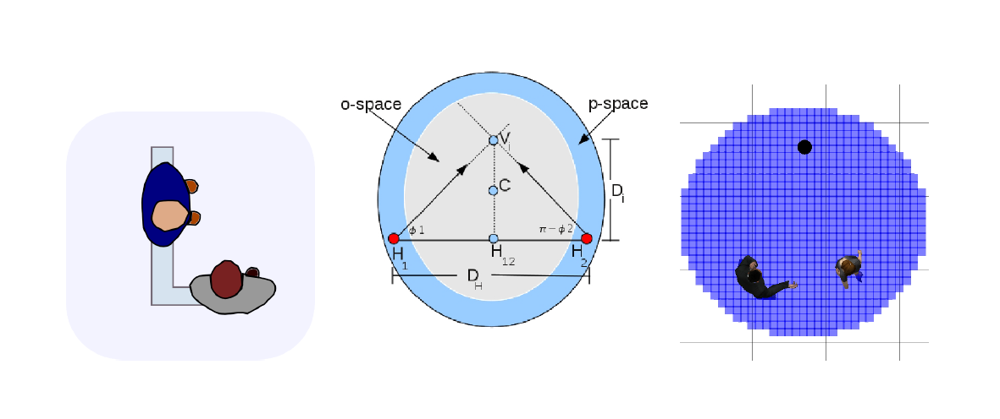
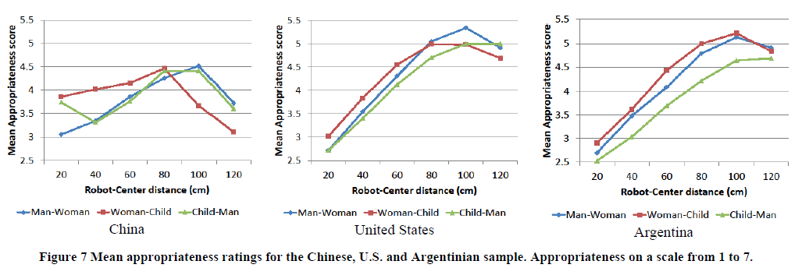
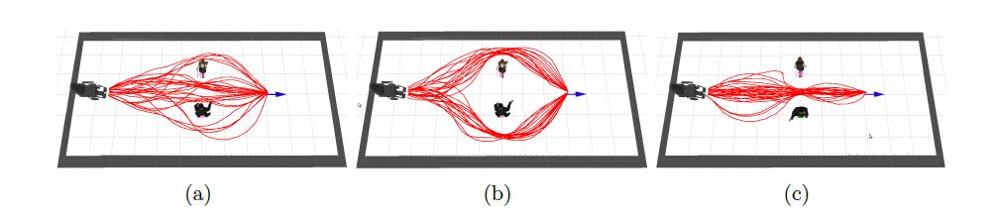
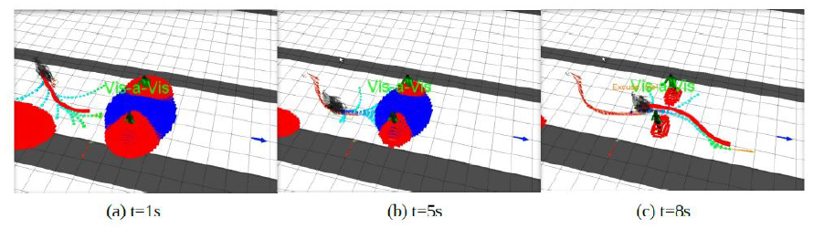
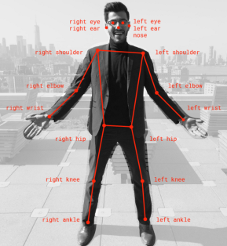
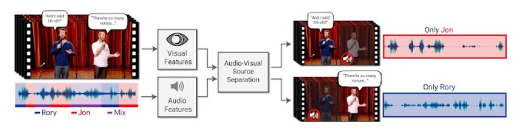

Acceptation d'un robot dans la société
Précédemment, il a été démontré qu'un robot est capable de naviguer dans un environnement dynamique et incertain. Cependant l'humain ne peut être assimilé à un simple objet dynamique évoluant dans un environnement. En effet l'humain a l'habitude d'évoluer dans une société régit par des règles sociales, ces règles définissent son comportement, ses déplacements, ses interactions ... Ainsi étudier la problématique de construction d'un robot de service implique à étudier la problématique de l'acceptation de ce dernier dans la société. Cette étude doit se mener sur deux fronts, d'une part le robot doit pouvoir se déplacer et approcher un humain de manière socialement acceptable, pour ce faire l'étude des scènes sociales est effectuée. D'autre part, le robot doit aller plus loin que savoir naviguer correctement dans une foule sans déranger psychologiquement cette dernière, un robot de service a pour objectif intrinsèque d'interagir avec des personnes. Cette problématique est complexe étant donné la variété des systèmes existants permettant de communiquer, il convient de les étudier.
Modélisation des scènes sociales
Pour pouvoir intégrer à un robot de service les différentes règles sociales il convient de les étudier pour en faire un modèle. L'étude de ce sujet a donné naissance à la théorie proxémique [@hall_hidden_1996]. Cette théorie permet d'expliciter la gestion par l'être humain de l'espace qui nous entoure et plus particulièrement de son aspect social.
Théorie
Plus précisément, la théorie proxémique décrit l'existence de plusieurs espaces. Classés en 5 types de scènes sociales, représentées sur la . Parmi, c'est 5 types de scènes sociales, il est possible de discriminer des scènes sociales physiques et des scènes sociales dépendant du contexte. Les scènes sociales physiques sont représentées par notre espace personnel prenant la forme d'un cercle autour d'une personne seule et représentant l'espace dans lequel il est malvenu d'évoluer. À contrario, l'espace d'interaction est situé dans un périmètre incluant plusieurs personnes discutant entre elles, et représentant une zone à occuper uniquement si l'objectif est de rentrer dans la conversation. En addition, il existe des espaces sociaux dépendant du contexte. L'espace de calcul d'information est une large zone où tout objet est considéré comme un obstacle à éviter. L'espace d'activité concerne un espace où une activité quelconque à lieu, tel qu'un quai de déchargement ou un terrain de pétanque par exemple. Finalement l'espace d'affordance est une zone possédant une activité potentielle sur laquelle il ne faut pas stationner, tel que la zone située devant des panneaux informatifs.

Dans la théorie proxémique, l'espace personnel est lui-même sous-catégorisé. Par exemple, comme décrit sur la , l'espace personnel est composé de 4 distances : la distance intime à moins de 40cm, la distance personnelle entre 45 et 125cm, la distance sociale entre 120 et 360cm et enfin la distance publique au-delà de 360cm.

Un robot évoluant dans un espace contenant des personnes sans comprendre et utiliser ces principes lors de ces déplacements est perturbant voir invasif, cela limite ses capacités à interagir avec un humain. Par exemple, un robot rentrant dans la sphère personnelle d'un individu provoque une situation de malaise chez ce dernier. Par ailleurs, il est malvenu qu'un robot passe entre deux personnes en pleine conversation. Ces deux exemples parmi tant d'autres démontrent l'importance de l'implémentation des règles sociales dans notre robot de service.
Cette implémentation se fait selon une méthode nommée "Filtre Social", où pour chaque trajectoire générée, l'estimation du dérangement dû à l'invasion des espaces personnels, d'interactions et d'activités est effectué. En paramétrant correctement les poids pour chaque dérangement, le robot pourra ainsi commencer à respecter les règles sociales les plus courantes, et ainsi être plus accepté dans une foule.
Pour pouvoir prendre en compte ces espaces dans le calcul de trajectoire, il doit être possible de les modéliser correctement. Si les espaces personnels et d'activité se prêtent bien à l'exercice, l'espace d'interaction lui se trouve être plus complexe à déterminer. En effet, un espace personnel et un espace d'activité se trouvent être des zones définie autour d'une personne ou d'un objet, ce qui est modélisable comme décrit par [@spalanzani_contribution_2015]. Concernant l'espace d'interaction, un autre paramètre s'ajoute à la position des sujets dans l'espace, leur orientation. Si deux personnes sont proches, l'interprétation sociale de leur interaction va être différente si elles se font face ou si elles sont dos à dos.
Une modélisation de ces espaces consiste à admettre que les personnes interagissant se positionnent selon des schémas appelés F-formation visible sur la .

Ces formations décrivent la position probable de deux personnes interagissant. De ces schémas en découle plusieurs notions telles que les notions de o-space et de p-space, espaces représentés .

Le o-space représente l'espace d'interaction dans lequel les individus communiquent. Cet espace est une zone dans laquelle il est dérangeant pour le bon déroulement de l'interaction de s'intégrer. Afin de s'intégrer dans le groupe interagissant, il est préférable de privilégier un positionnement dans le p-space. C'est de cette information que découle les positions que le robot peut atteindre afin d'amorcer une interaction.
Ces distances sont évaluées selon plusieurs paramètres [@joosse_cultural_2014]. Ces paramètres étant l'âge de la personne approchée ou encore le pays dans lequel évolue le robot comme décris sur la .

Les descriptions détaillées ici, une fois implémentées, permettent aux robots de pouvoir comprendre certaines des règles sociales qui régissent les déplacements dans un foule et ainsi d'être mieux accepté lors d'une interaction.
Implémentation
Comme décrit dans la , l'algorithme de calcul de trajectoires utilisé pour naviguer dans un environnement dynamique est un algorithme RRT se basant sur les calculs de coûts de trajectoires afin de planifier un déplacement. Toutefois, l'algorithme RiskRRT présenté dans cette même sous-section ne convient pas lorsque pour la génération des trajectoires "socialement acceptables".
Pour palier à ce problème, il faut intégrer un filtre social dans l'algorithme RiskRRT [@spalanzani_contribution_2015]. Pour cela, il faut rajouter notamment la notion de risque de rompre ces conventions sociales en se concentrant surtout sur le respect des espaces personnels, d'interaction et d'activité. Ce rajout passe par l'intégration dans la représentation de l'environnement une liste de $Q$ espaces personnels, un pour chaque personne détectée et une liste de R interactions liées à un modèle de type o-space. Ces interaction sont de type Homme-Homme ou Homme-objet.
Plus précisément, il est possible calculer la probabilité de succès d'une trajectoire par le calcul suivant :
$$P_d = 1 - \prod\limits_{m=1}^M (1 - P^m_d) \prod\limits_{i=1}^R (1 - P^i_d) \prod\limits_{h=1}^Q (1 - P^h_d)$$
Avec $P^m_d$ la probabilité de rentrer en collision avec un objet dynamique m, $P^i_d$ la probabilité de gêner l'interaction i et $P^h_d$ la probabilité de gêner l'espace personnel h. Le choix de la trajectoire prend alors en compte le risque de collision, le respect des espaces personnels et d'interaction. La présente les résultats de l'ajout de cette probabilité.

Une limite de cette implémentation est qu'elle risque, dans des espaces trop peuplés, de limiter grandement le nombre de chemins possibles pour emmener le robot à son but, même de faire en sorte que le RiskRRT ne trouve aucune solution. Pour éviter cela, il est possible de réduire les contraintes sociales, par exemple en réduisant la taille des espaces sociaux, soit en réduisant le poids de ces contraintes sur le calcul de $P_d$. Ce phénomène est illustré sur la .

En conclusion cette partie renseigne sur les différentes solutions existantes pour permettre d'aller au-delà d'une navigation fonctionnelle et de se faire accepter par la foule.
Interactions homme robot
Il a été démontré comment un robot pouvait naviguer dans un environnement peuplé d'humains tout en respectant certaines règles sociales courantes. Cependant, à ce stade, la question des interactions avec des humains n'ont toujours pas été traitées. Tout comme un dialogue humain-humain, un dialogue humain-robot est soumis à différents codes.
Le type d'interaction dépend dans un premier temps de la position entre les deux personnes. En effet, lorsque deux personnes souhaitent interagir ensemble, le premier contact à lieu en général dans la sphère publique. À cette distance, il n'est pas possible de communiquer de manière vocale. En effet, à cette distance, les capacités de reconnaissance sont d'autant plus limitées en raison des bruits environnants parasites. Il est néanmoins possible de communiquer par la gestuelle en faisant un signe de la main, ou en ayant un contact visuel avec la personne par exemple. Les interactions vocales n'interviennent que lorsqu'une personne ou un robot se trouve dans la sphère sociale d'une autre personne. À cette distance, il est possible de se parler et de s'entendre [@satake_how_2009]. Les interactions non verbales restent néanmoins présentes. En effet, lors d'un dialogue entre humains, près de 65% des informations transmises le sont par des signaux non verbaux. Seuls 35% sont transmis de façon orale. L'analyse des signaux non verbaux est donc essentielle lors d'interactions humain-robot.
Interaction non verbales
Il existe différents types d'interactions non verbales qui peuvent être réalisées pour interagir ou signifier l'intention de d'interagir avec une personne.
La position du regard est l'une des interactions principales pour montrer son intention. Dans le cas de l'utilisation d'un robot, cela nécessite dans un premier temps d'appliquer un algorithme de détection faciale tel que la méthode de [@viola_robust_nodate]. Il s'agit d'une méthode d'apprentissage supervisée, nous ne rentrons pas ici dans l'explication de ce qu'est l'apprentissage supervisé, nous le détaillons plus tard dans le document. Après avoir repéré un visage, il faut à présent que le robot le regarde et le suive. En général, les robots sociaux sont équipés d'une tête munie de caméras. Lorsque le robot bouge la tête, la caméra permettant la reconnaissance bouge avec. Pour que le robot regarde son interlocuteur, il suffit donc de déplacer la tête pour que le visage apparaisse au centre de l'image. Dans le cas où il n'y aurait pas de caméra au niveau de la tête, des calculs sont nécessaires pour estimer la position de la tête permettant de simuler le regard de l'interlocuteur. Dans le cas du projet Reachy mobile, le robot dispose de caméras au niveau des yeux ce qui simplifie le regard avec l'utilisateur.
La position du regard n'est pas à proprement parler un moyen d'interagir avec un utilisateur, il s'agit d'un indicateur du souhait d'interaction. Les interactions non verbales se basent essentiellement sur la reconnaissance de gestes. Il existe deux grandes catégories d'outils de reconnaissance, les outils basés sur la vision et ceux basés sur le contact. [@hiyadi_reconnaissance_2016]
Les outils de reconnaissance basés sur la vision peuvent utiliser différents types de caméras tels que les caméras infrarouges, les caméras monoculaires et les stéréo caméra. Ces caméras permettent d'acquérir les données qu'il faut ensuite analyser pour détecter les différents mouvements. Pour cela, il existe différents réseaux de neurones permettant de définir la position d'une personne. Pour ce projet, le réseau de neurone retenu est PoseNet car il est optimisé pour fonctionner avec le TPU Coral, disponible sur le robot Reachy. PoseNet fournit la position de 17 points clés du corps visible sur la .

Certains outils basés sur le contact nécessitent l'utilisation de matériel personnel pour interagir. Pour fonctionner, l'utilisateur doit avoir en sa possession des capteurs tels des accéléromètres ou des gyroscopes pour déterminer le mouvement effectué. Ces dispositifs sont difficiles à mettre en place lors d'événements impliquant un public nombreux, car il faudrait fournir à chaque utilisateur du matériel.
Enfin, d'autres outils basés sur le contact ne nécessitent pas l'utilisation de matériel personnel pour interagir, il s'agit des interfaces graphiques et tactiles telles que les tablettes. Ces solutions permettent de passer outre les interactions verbales, mais nécessite l'intégration d'une tablette au système ainsi que la création d'une application dédiée. Cette solution n'est pas retenue pour le projet, car trop coûteuse en temps pour l'intégration de la tablette et la conception de l'application. En effet, une étude ergonomique serait nécessaire avant le développement de l'application afin que la tablette soit accessible par tous (enfants, adultes, personnes en situation de handicaps). Il aurait notamment fallu déterminer la hauteur idéale d'intégration de la tablette et réfléchir à la question : "Comment rendre l'utilisation de la tablette intuitive ?" en réalisant des entretiens avec des potentiels utilisateurs.
Les interactions non verbales permettent principalement à l'utilisateur de se faire comprendre par le robot. Le robot peut faire des mouvements pour transmettre des émotions. Par exemple le robot Reachy peut bouger ses antennes pour exprimer des émotions tel que la tristesse. Pour échanger des informations, le robot peut faire également des mouvements. Cependant, comment expliquer la signification de 2 signes différents ? Pour cela, les interactions verbales sont une possibilité grâce au NLU (Natural Language Understanding). Ces interactions sont divisées en deux catégories, la synthèse vocale et la reconnaissance vocale.
Interaction verbales
La synthèse vocale, également appelée Text To Speech, permet de transmettre des informations à l'oral à partir d'un texte écrit. Le passage de l'écrit à l'oral nécessite plusieurs phases. Dans un premier temps le texte doit être transformé en phonème, c'est-à-dire en une suite de sons qui seront dans un second temps utilisé pour la production orale. La première phase est la plus critique et est divisée en plusieurs étapes. La première étape consiste à pré-traiter le texte en identifiant les phrases. Ensuite, une analyse syntaxique et morphosyntaxique est réalisée. Cette analyse permet de définir la classe de chaque mot. Cette étape est déterminante, car la classe du mot détermine en grande partie sa prononciation. Par exemple, le mot "président" peut faire référence au nom ou au verbe et la prononciation ne sera pas la même selon le cas. La détermination des catégories peut se faire en suivant des règles heuristiques ou par une approche statistique. La troisième étape est la transformation graphèmes-phonèmes. Des systèmes d'apprentissage automatique permettent de retranscrire le texte en chaîne phonétique qui pourra ensuite être utilisée pour la synthèse acoustique. Pour qu'une synthèse vocale soit appréciée, la voix doit paraître naturelle. Une voix naturelle est principalement liée à la prosodie [@dalessandro_synthese_2015]. La prosodie est constituée de l'intonation, le rythme et l'intensité. L'intonation est l'élément le plus critique afin de rendre une voix naturelle. En fonction de la hauteur moyenne choisie, le son se rapprochera d'une voix masculine (environ 125 Hz), d'une voix féminine (environ 250 Hz) ou d'un enfant (environ 350 Hz)[@lienard_les_1977]. De plus, afin de paraître naturelle, l'intonation devra varier au cours du temps. Le rythme est également important puisqu'un phonème énoncé trop rapidement sera incompréhensible. À l'inverse, énoncé trop lentement, cela ne sera pas naturel. Enfin l'intensité n'impacte que peu le naturel d'une voix. Le principal défaut de la synthèse vocale est la barrière de la langue. En effet, comme les phrases doivent être inscrites au préalable, la langue doit être définie en amont. Dans le cas d'un système vocal destiné à interagir lors d'événement tel que des congrès, le problème de la langue peut se poser si le système doit interagir avec du public international ne parlant pas la même langue.
La reconnaissance vocale ou Speech To Text permet de transcrire à l'écrit la parole afin d'analyser le contenu. La reconnaissance vocale est plus complexe que la synthèse vocale, car la machine doit comprendre ce que l'interlocuteur dit. Avant de pouvoir interpréter le sens d'un discours émis par une personne, il faut être en mesure de séparer les différents mots et phrases qui ne sont à l'origine qu'un signal continu d'information [@lienard_les_1977]. Un Français cultivé connaît environ 30 000 mots, identifier un mot se révèle donc complexe. Chaque personne présente également des caractéristiques propres (timbre de la voix, étendu mélodique, vitesse d'élocution) qui complexifie la détection de mots. La détection des mots est donc déjà une étape délicate. Cependant, l'interprétation des mots n'est pas pour autant plus aisée. En effet, le langage naturel présente de nombreuses ambiguïtés, un même mot peut avoir plusieurs sens selon le contexte ou l'intonation, par exemple le mot "personne" peut signifier "individu" ou au contraire "l'absence d'individu". À l'inverse, deux mots différents peuvent se prononcer de la même manière ou légèrement différemment, mais signifier deux choses différentes, par exemple vin et vingt. En plus de la difficulté du traitement du langage. La reconnaissance vocale est également soumise à de nombreuses interférences tel que le bruit de fond. Dans le cas où le bruit de fond n'est pas une autre voix que celle du locuteur en question, de nombreux algorithmes de reconnaissance vocale existent [@ibm_cloud_education_what_2020]. S'il y a plusieurs voix en même temps, la reconnaissance vocale sera perturbé en raison de l'effet cocktail party. La séparation des voix devient difficile. Google a mis au point un système permettant de séparer plusieurs voix grâce à la vidéo. En se basant sur le mouvement des lèvres, le système est en mesure de retrouver la partie audio correspondante [@mosseri_looking_2018].

Néanmoins, en raison de l'environnement dans lequel sera le robot, c'est-à-dire dans une foule, la reconnaissance vocale ne sera pas utilisée dans le projet Reachy-Mobile. En effet, les systèmes actuels ne sont pas suffisamment au point et le projet n'est pas assez long pour permettre la mise en place de reconnaissance vocale performante.
L'utilisation indépendante des différents types d'interaction ne permet pas d'obtenir un système le plus efficace possible, l'association des différents types d'interaction est donc nécessaire. Dans le cadre du projet Reachy Mobile, il a été décidé d'associer les interactions non verbales impliquant des mouvements du robot afin d'illustrer les propos dit par le robot grâce à l'utilisation de la synthèse vocale. Les mouvements du robot seront également utilisés pour transmettre des émotions telles que la tristesse en cas de perte aux jeux. L'utilisateur pourra quant à lui interagir avec le robot en réalisant les gestes qui seront indiqués par le robot et reconnus grâce à l'utilisation de PoseNet. Enfin, la mise en place de systèmes de redondance tel que la demande de validation permettront de limiter les erreurs lors des interactions, notamment lors du choix du jeu par l'utilisateur.